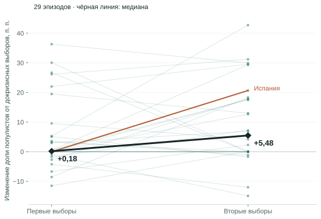
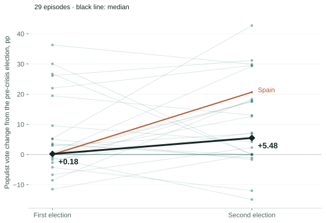
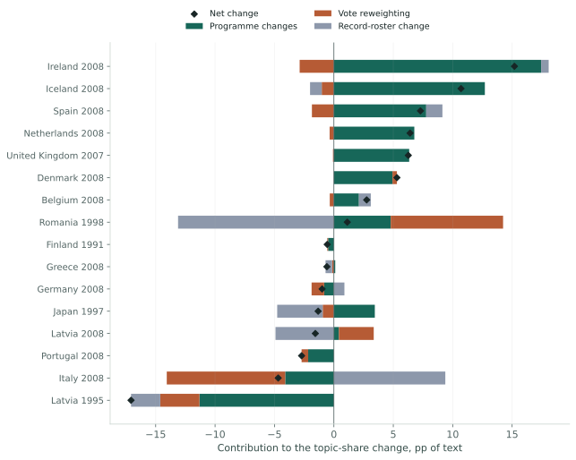
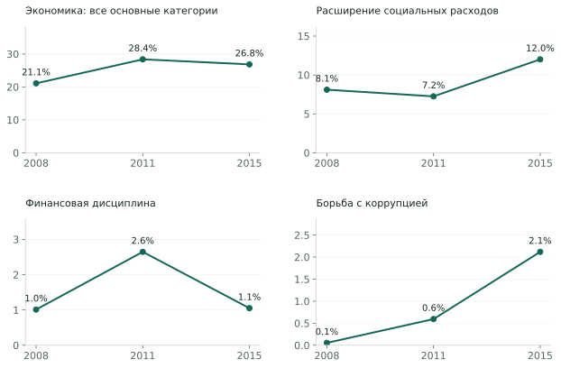
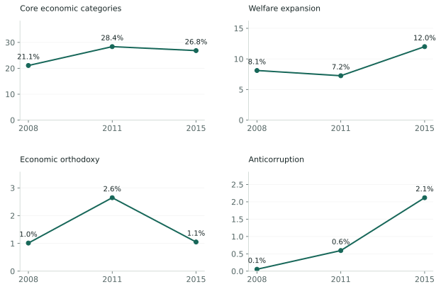
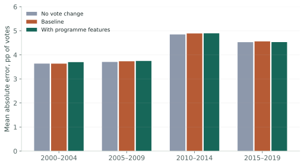

Один кризис, две смены политического предложения
В ноябре 2011 года испанские социалисты потеряли около 15 процентных пунктов голосов, а большинство получила консервативная Народная партия. Банковский кризис начался тремя годами раньше. На следующих парламентских выборах, в декабре 2015-го, появился другой крупный победитель: Podemos и её региональные союзники получили около 21% голосов. Это новая левая сила, которую World Populism Dataset относит к популистским: её кампания противопоставляла обычных граждан политической и экономической элите.
Такую последовательность легко описать как переход от экономических трудностей к протестному голосованию. Но эта формулировка пропускает важный вопрос: что успели предложить прежние партии до прорыва новых? Они могли изменить программы задолго до следующей смены победителей. А новые партии могли говорить о знакомых проблемах, предлагая другие способы их решения.
Мы прослеживаем 29 банковских кризисов в 28 странах до вторых парламентских выборов, затем сопоставляем программы там, где сохранились достаточно полные данные. В программной части остаются 16 эпизодов в 15 странах. Это позволяет разделить три изменения: содержание программ прежних партий, их доли голосов и состав наблюдаемых партий. Разделение существенно: популярность новой партии и появление новой темы не обязательно происходят одновременно.
One crisis, two changes in political supply
In November 2011, Spain’s Socialists lost roughly 15 percentage points of the vote and the conservative People’s Party won a majority. The banking crisis had begun three years earlier. At the next parliamentary election, in December 2015, another major winner emerged: Podemos and its regional allies won about 21%. This new left-wing force is classified as populist by the World Populism Dataset: its campaign opposed ordinary citizens to a political and economic elite.
It is tempting to describe this sequence as economic hardship turning into protest voting. That account leaves an important question unanswered: what had the established parties offered before the newcomers broke through? They could have revised their programmes well before the next change in winners. New parties, in turn, could address familiar problems while proposing different remedies.
We follow 29 banking crises in 28 countries through the second parliamentary election, then compare programmes where sufficiently complete records survive. The programme analysis retains 16 episodes in 15 countries. It separates three changes: the content of continuing parties’ programmes, their vote shares, and the roster of observed parties. A new party’s success and a new issue’s emergence need not coincide.
Первые выборы показывают только начало
Сначала проверим, насколько испанская последовательность характерна для других кризисов. В прежнем расчёте мы сравнивали последние выборы перед кризисом с первыми после него. Теперь сохраняем ту же исходную точку и добавляем вторые выборы. Все 29 эпизодов проходят проверку: второе голосование состоялось в пределах десяти лет, без нового банковского кризиса в используемой хронике, при демократическом режиме по классификации V-Dem.
На первых выборах медианный прирост популистских кампаний составляет 0,18 п. п., на вторых 5,48 п. п. Среднее изменение увеличивается с 5,35 до 9,54 п. п. Прирост относительно докризисного голосования наблюдается соответственно в 15 и 18 эпизодах. Медианный срок после начала кризиса составляет около двух и шести лет. Это одна и та же выборка, поэтому различие не возникает из-за добавления других стран.
Популизм здесь означает определённый способ объяснять политику. По критериям World Populism Dataset, элита удерживает власть в своих интересах и сознательно причиняет ущерб обычным людям. Обещание повысить доходы или критика некомпетентного правительства сами по себе для этой классификации недостаточны. Складываются доли голосов за классифицированные кампании, как левые, так и правые. База обычно охватывает кампании от 5% голосов; изменение суммы может отражать и изменение классификации.
The first election captures only the beginning
First, is Spain’s sequence unusual? Our earlier calculation compared the last pre-crisis election with the first election afterwards. We now retain the same baseline and add the second election. All 29 episodes qualify: the second ballot took place within ten years, without a subsequent banking onset in the chronology, and under a democratic regime according to V-Dem.
The median gain for populist campaigns is 0.18 percentage points at the first election and 5.48 points at the second. The mean rises from 5.35 to 9.54 points. Gains relative to the pre-crisis election occur in 15 and 18 episodes respectively. The median elapsed time is about two and six years. Because the sample stays fixed, different country composition does not generate this contrast.
Populism here denotes a particular account of politics. Under the World Populism Dataset’s criteria, an elite holds power for its own benefit and deliberately harms ordinary people. Promising higher incomes or criticising an incompetent government is insufficient. We sum the vote shares of classified campaigns on both the left and right. The source generally covers campaigns receiving at least 5%; changes in the total can also reflect changes in classification.
Одни и те же 29 эпизодов, два следующих голосованияThe same 29 episodes, two subsequent elections


Посмотреть все выборыExplore all elections
Более поздний рост ещё не доказывает влияние кризиса
За шесть лет поддержка партий может измениться и без банковского кризиса. Поэтому сравним результат с двумя последовательными выборами в спокойные периоды: без банковского кризиса и годового сокращения ВВП на всём интервале. Нашлось 50 таких последовательностей в 21 стране. Их медианное изменение к вторым выборам составляет +1,69 п. п., а среднее +4,26 п. п.
Состав стран различается. Если сначала сравнить кризисные и спокойные последовательности внутри каждой из 21 общей страны, а затем дать странам одинаковый вес, разница средних к вторым выборам составляет +5,41 п. п. Но интервал, полученный повторной выборкой стран, широк: от −1,19 до +12,04 п. п. Общие мировые потрясения дополнительно ограничивают такую оценку неопределённости. Это описательное сравнение, которое не воспроизводит мир без конкретного кризиса.
Таким образом, первые выборы действительно пропускают часть последующих перемен. Однако вся поздняя прибавка не становится автоматически последствием финансового краха. Funke, Schularick и Trebesch исследуют последствия кризисов на значительно более длинной истории и отдельно рассматривают ультраправых. Наш показатель объединяет популистские кампании разных направлений и отвечает на более узкий вопрос о последовательности выборов.
Теперь можно перейти от того, когда изменились голоса, к тому, что партии предложили избирателям между этими голосованиями.
A later gain does not establish a crisis effect
Party support can change over six years without a banking crisis. We therefore compare two successive elections in calm periods, with neither a banking crisis nor an annual GDP contraction anywhere in the interval. There are 50 such sequences in 21 countries. By the second election their median change is +1.69 points and their mean change +4.26 points.
The country mix differs. Comparing banking and calm sequences within each of the 21 shared countries, then weighting countries equally, gives a mean second-election difference of +5.41 points. But a country-resampling interval is wide: −1.19 to +12.04 points. Shared global shocks further limit that uncertainty calculation. This descriptive comparison does not reconstruct a world without each particular crisis.
The first election therefore misses some subsequent changes. The entire later gain cannot automatically be attributed to the financial crash. Funke, Schularick and Trebesch examine a much longer historical period and consider the far right separately. Our measure combines populist campaigns across ideological directions and addresses the narrower question of electoral sequence.
We can now move from when votes changed to what parties offered voters between those elections.
Экономическая повестка не возникла с нуля
Для сравнения предложений используем Manifesto Project 2023a. Исследователи разбивают программы на отдельные смысловые высказывания и относят их к темам. Мы считаем долю основных экономических категорий, затем усредняем её между доступными программами с весами по результатам партий на соответствующих выборах.
Например, если две партии получают 60% и 40% голосов, а экономике посвящены 20% и 30% их программ, взвешенная доля равна 24%: 0,6 × 20 + 0,4 × 30. Это характеристика программ с учётом поддержки партий. Она не означает, что 24% избирателей голосовали из-за экономики.
В основной выборке программы должны представлять не менее 75% голосов на обоих голосованиях. Восстановленные и заменённые тексты исключены. Из исходных 29 эпизодов остаются 16, преимущественно европейских, включая два латвийских кризиса. Для десяти эпизодов нет подходящих программ хотя бы на одном конце, ещё для трёх охват недостаточен. Поэтому результаты этой части нельзя переносить на все 28 стран.
До кризиса основные экономические категории занимали в среднем 23,3% взвешенного текста, после него 24,8%. Если добавить социальные расходы, образование, труд и другие материальные вопросы, получится 47,6% и 49,8%. Эти темы уже были крупной частью программ. При этом в узком экономическом показателе рост наблюдается лишь в восьми эпизодах из 16; в остальных восьми доля снижается.
The economic agenda did not start from zero
To compare proposals we use the Manifesto Project 2023a. Researchers divide programmes into individual meaningful statements and assign them to topics. We calculate the share of core economic categories and average it across available programmes, using each party’s vote share at the corresponding election as its weight.
Suppose two parties win 60% and 40% of the votes, while economics occupies 20% and 30% of their programmes. The weighted share is 24%: 0.6 × 20 + 0.4 × 30. This describes programmes weighted by party support. It does not mean that 24% of voters chose a party because of economics.
The primary sample requires programme coverage of at least 75% of votes at both elections. Estimated and substitute texts are excluded. Sixteen of the original 29 episodes remain, predominantly European and including two Latvian crises. Ten episodes lack eligible programmes at one or both endpoints; three more have insufficient coverage. This part cannot represent all 28 countries.
Before the crisis, core economic categories averaged 23.3% of weighted programme text; afterwards, 24.8%. Adding welfare, education, labour and other material issues yields 47.6% and 49.8%. These subjects were already substantial. The narrower economic share rises in just eight of the 16 episodes and falls in the other eight.
Кто изменил общую повестку?
Даже небольшой общий сдвиг может скрывать крупные изменения, которые компенсируют друг друга. Вернёмся к двум партиям из примера. Общая экономическая доля вырастет, если обе перепишут свои программы. Она вырастет и при неизменных текстах, если больше голосов получит партия, которая уже уделяла экономике больше места. Чтобы различить эти процессы, мы отдельно учитываем изменение текстов и изменение электоральных весов.
В среднем по 16 эпизодам изменения программ повторно наблюдаемых партий дают +3,00 п. п. экономической доли. Перераспределение голосов между ними даёт −0,61 п. п., изменение состава партийных записей ещё −0,79 п. п. Вместе это наблюдаемые +1,60 п. п. Разложение точное: мы усредняем два порядка расчёта, сначала меняя тексты, затем веса, и наоборот.
Изменение состава записей нельзя целиком назвать появлением новых партий. Туда попадают новые участники, распавшиеся союзы, изменившиеся идентификаторы и отсутствующие программы. Поэтому отдельно сравниваем только партии, присутствующие на обоих голосованиях. В 11 эпизодах они представляют не менее 75% голосов с каждой стороны. В девяти из этих 11 сравнений вклад изменения их программ по абсолютной величине больше вклада перераспределения голосов.
Это главный результат разложения: сдвиг в закодированной повестке часто происходит внутри прежних партий. Он не сводится к приходу участников, которые уже говорили о других проблемах. Но положительный вклад текста ещё не означает, что переписанная программа помогла партии победить.
Who changed the aggregate agenda?
A small net shift can conceal large offsetting changes. Return to the two-party example. The aggregate economic share rises if both parties rewrite their programmes. It also rises with unchanged texts if the party already devoting more space to economics wins more votes. We separate text changes from changes in electoral weights to distinguish these processes.
Across the 16 episodes, programme changes within repeatedly observed parties contribute an average +3.00 points to the economic share. Vote reweighting among them contributes −0.61 points; changes in the record roster contribute another −0.79 points. Together these equal the observed +1.60 points. The decomposition is exact: we average the two possible calculation orders, changing texts before weights and weights before texts.
Roster change cannot simply be called new-party entry. It includes new participants, dissolved alliances, changed identifiers and missing programmes. We therefore also compare only parties observed at both elections. In 11 episodes these represent at least 75% of votes on each side. In nine of those 11 comparisons, the absolute contribution of programme changes exceeds that of vote reweighting.
The central accounting result is that shifts in the coded agenda often occur within established parties. They cannot be reduced to the arrival of actors already discussing other problems. A positive text contribution, however, does not establish that rewriting a programme helped a party win.
Общий сдвиг складывается из трёх компонентовThree components add up to the aggregate shift

Посмотреть числа и охват по странамExplore values and country coverage
Какие объяснения выдерживают проверку
Первое возможное объяснение: это обычное обновление программ, которое происходит перед любыми выборами. Данные с ним согласуются. Среди 75 сопоставимых пар спокойного периода вклад изменения текстов также чаще всего оказывается крупнейшим: в 51 паре. Само преобладание этого компонента не является особенностью банковского кризиса.
Второе: экономические темы начали усиливаться раньше. Для 14 кризисных эпизодов доступны программы и в предшествующем межвыборном интервале. Средний экономический сдвиг после кризиса превышает предшествующий на 1,36 п. п., но интервал повторной выборки стран составляет от −3,58 до +6,55 п. п. У нас нет точной оценки дополнительного поворота, специфичного для кризиса.
Третье: часть изменений создаёт способ измерения. В восьми из 16 эпизодов у сопоставленных партий меняется руководство по кодированию. Если сохранить только партии с одной известной версией правил и снова потребовать 75% охвата, остаются четыре эпизода. В трёх вклад текстов по-прежнему больше вклада голосов, но такая проверка слишком мала для уверенного обобщения. Ошибки кодирования тоже попадают в компонент изменения программ.
Наконец, средние зависят от исторической волны и состава выборки. Без кризисов 2007–2009 годов остаются четыре программных сравнения, а средний экономический сдвиг меняет знак. Повышение порога охвата до 90% оставляет девять эпизодов и увеличивает средний прирост. Поэтому мы публикуем все варианты, а не выбираем одно число как универсальный ответ.
Which alternative explanations survive?
First, this may be the ordinary revision of programmes before elections. The data are consistent with that explanation. Among 75 eligible calm-period pairs, text changes are also the largest component most often: in 51 pairs. Their predominance is not distinctive to banking crises.
Second, economic topics may have been gaining space already. For 14 crisis episodes, programmes are also available for the preceding electoral interval. The average economic shift after the crisis exceeds the preceding shift by 1.36 points, but the country-resampling interval is −3.58 to +6.55 points. We lack a precise estimate of an additional crisis-specific turn.
Third, measurement can generate part of the change. In eight of the 16 episodes, matched parties cross a coding-handbook revision. Keeping only parties coded under the same known handbook, and again requiring 75% coverage, leaves four episodes. Text changes still outweigh vote reweighting in three, but this check is too small for a confident generalisation. Coding errors also enter the programme-change component.
Finally, averages depend on the historical wave and sample composition. Excluding crises beginning in 2007–2009 leaves four programme comparisons and reverses the mean economic shift. Raising the coverage threshold to 90% retains nine episodes and increases the mean gain. We publish all these variants rather than selecting one number as a universal answer.
Одна тема может содержать противоположные предложения
Разложение объясняет, откуда берётся общий сдвиг. Но чего именно хотят партии, когда пишут об экономике? Поддержка бизнеса, бюджетная дисциплина и расширение пособий могут увеличивать внимание к материальным проблемам, предлагая разным группам разные выгоды и издержки.
В Испании взвешенная доля основных экономических категорий выросла с 21,1% в 2008 году до 28,4% в 2011-м. К 2015 году она снизилась до 26,8%, хотя именно тогда состоялся прорыв Podemos. При этом доля высказываний за расширение социальных расходов выросла с 7,2% до 12,0%, а категория финансовой дисциплины сократилась с 2,6% до 1,1%. Социальные расходы учитываются отдельно от узкого экономического набора.
Меняется не только количество разговоров об экономике, но и состав предложений. Это не доказательство того, что конкретная мера принесла голоса Podemos: приведённые значения относятся ко всем доступным программам, а между выборами менялись правила кодирования. Но оно показывает, почему один широкий ярлык «экономика» недостаточен для описания политической перемены.
Mian, Sufi и Trebbi предлагают механизм, помогающий понять это различие: финансовый кризис наносит группам неодинаковые потери, и желательные для них способы восстановления могут расходиться. Наши национальные данные не проверяют этот механизм на уровне людей. Они позволяют увидеть разнообразие предложений, которое исчезает при объединении всех материальных вопросов в одну категорию.
One topic can contain conflicting proposals
The decomposition identifies where an aggregate shift comes from. But what do parties want when they discuss economics? Business support, fiscal discipline and welfare expansion can all focus attention on material problems while distributing benefits and costs differently.
In Spain, the weighted share of core economic categories rose from 21.1% in 2008 to 28.4% in 2011. By 2015 it fell to 26.8%, even as Podemos broke through. Meanwhile, statements supporting welfare expansion rose from 7.2% to 12.0%, and economic orthodoxy fell from 2.6% to 1.1%. Welfare is measured separately from the narrow economic category set.
Both the amount of economic discussion and the mix of proposals can change. This does not establish that a particular policy won votes for Podemos: the figures describe all available programmes, and coding instructions changed between elections. It does show why a single broad label, “economics”, is insufficient to describe political change.
Mian, Sufi and Trebbi propose a mechanism that helps explain the distinction: a financial crisis imposes different losses on different groups, whose preferred recovery policies may diverge. Our national data do not test that individual-level mechanism. They reveal a diversity of proposals that disappears when all material issues are collapsed into one category.
Испания: экономические темы и предлагаемые меры менялись по-разномуSpain: economic topics and proposed remedies changed differently


Помогают ли программы предсказывать голоса?
Описать изменение программы и объяснить успех партии по-прежнему разные задачи. Проверим более скромное утверждение: помогают ли тематические доли улучшить прогноз изменения голосов у партий, участвующих в обоих выборах?
Обучаем модели только на более ранних выборах и проверяем на следующих пятилетних отрезках, с 2000–2004 по 2015–2019 годы. В проверке 89 пар выборов в 27 странах и 463 наблюдения продолжающих участие партий. Базовая модель знает предыдущую долю голосов, партийное семейство, год и длину межвыборного интервала. Расширенная получает ещё прежние тематические доли и изменения программ. При настройке модели страны разделяются между обучением и проверкой.
Средняя абсолютная ошибка базовой модели составляет 4,15 п. п. голосов, расширенной 4,17 п. п. Каждая пара выборов имеет одинаковый вес. Добавление программ в этой проверке не улучшило прогноз. Это не означает, что программы не влияют на выбор: модель проста, не учитывает лидеров, опросы и статус правящей партии, а новые участники исключены. Результат ограничивает более конкретное обещание: одних этих тематических признаков недостаточно, чтобы уверенно объяснить электоральный выигрыш.
Do programmes help predict votes?
Describing programme change and explaining electoral success remain different tasks. We test a more modest claim: do topic shares improve predictions of vote-share changes among parties competing at both elections?
Models learn only from earlier elections and are evaluated in subsequent five-year blocks, from 2000–2004 through 2015–2019. The test covers 89 election pairs in 27 countries and 463 continuing-party observations. The baseline uses previous vote share, party family, year and electoral-interval length. The expanded model also receives previous topic shares and programme changes. Model tuning separates countries between training and validation.
The baseline’s mean absolute error is 4.15 percentage points of votes; the expanded model’s is 4.17 points. Each election pair has equal weight. Programme features did not improve this test. That does not establish that programmes have no influence: the model is simple, omits leaders, polls and incumbency, and excludes entrants. It limits the narrower promise that these topic features alone can reliably explain electoral gains.
Тематические признаки не улучшили эту проверку прогнозаTopic features did not improve this forecasting test

Политическая перемена состоит из нескольких процессов
В изученных эпизодах нет единого перехода к экономической повестке. Материальные вопросы занимали много места ещё до кризисов. После них доля экономических тем росла в одних странах и снижалась в других. Там, где закодированная повестка менялась, значительную часть изменения часто создавали программы прежних партий, а не только перераспределение поддержки.
Электоральная перестройка имеет собственную последовательность: первые выборы пропускают часть последующего роста популистских кампаний. Но поздний рост голосов, обновление программы и смена предлагаемых мер не являются одним и тем же событием. Из этих данных нельзя заключить, что определённая риторика вызвала определённое голосование, или что избиратели перестали интересоваться темой, которую партия стала реже упоминать.
Поэтому политическую реакцию на экономические трудности полезно описывать точнее: какие группы понесли потери, какие способы помощи появились, какие партии их предложили и как изменилась поддержка. Мы измерили два последних процесса и показали, почему их нельзя подменять одним показателем. Для объяснения выбора отдельных людей понадобятся данные об их потерях, взглядах, приоритетах и голосовании.
Political change contains several distinct processes
The episodes studied do not display a uniform turn towards an economic agenda. Material questions occupied substantial space before the crises. Afterwards, economic topic shares rose in some countries and fell in others. Where the coded agenda changed, revisions within established parties often contributed substantially, alongside shifts in support.
Electoral restructuring follows its own sequence: first elections miss some subsequent gains for populist campaigns. But later vote gains, programme revision and changes in proposed remedies are not the same event. These data cannot show that particular rhetoric caused particular votes, or that voters stopped caring about an issue a party mentioned less frequently.
A more precise account of the response to hardship asks which groups suffered losses, which remedies emerged, which parties offered them and how support changed. We measured party proposals and support, showing why one cannot substitute for the other. Explaining individual choices requires evidence on people’s losses, attitudes, priorities and votes.
NLP, данные и воспроизводимостьNLP, data and reproducibility
Как мы проверяли автоматическое чтение программ
Для NLP-проверки использовали испанские высказывания с внешней разметкой Comparative Agendas Project. Обучение охватывает программы 1982–2000 годов, настройка проведена на программе 2004 года, итоговая проверка на 3 636 высказываниях PSOE 2008 года. Повторяющиеся между периодами тексты удалены из обучения и настройки.
Сравнили TF–IDF и логистическую регрессию с многоязычным BERT-энкодером E5-small и обученным линейным классификатором. Энкодер работал локально на GPU Mac; его веса не дообучались. На последнем документе точность выросла с 50,0% до 60,2%, macro-F1 с 0,482 до 0,588. Ошибка мягкой оценки доли экономических тем снизилась с +2,62 до +1,16 п. п. Но долю гражданских прав BERT недооценил на 3,93 п. п.
Один документ не подтверждает переносимость на другие страны и языки. Разметка CAP отличается от Manifesto Project. Поэтому предсказания модели не подставлены в основные исторические расчёты. Ни высказывания, ни закрытые исходные данные не опубликованы заново; доступны код, агрегированные ошибки и версия модели.
How we tested automated programme reading
The NLP benchmark uses Spanish statements with external Comparative Agendas Project labels. Training covers 1982–2000 programmes, tuning uses the 2004 programme, and final evaluation uses 3,636 statements from PSOE’s 2008 programme. Cross-period text repetitions were removed from training and tuning.
We compare TF–IDF plus logistic regression with the multilingual BERT encoder E5-small plus a trained linear classifier. The encoder ran locally on the Mac GPU; its weights were frozen. On the final document, accuracy increased from 50.0% to 60.2% and macro-F1 from 0.482 to 0.588. The soft economic-share estimate’s error fell from +2.62 to +1.16 points. But BERT underestimated civil-rights content by 3.93 points.
One document does not validate transfer to other countries or languages. CAP’s coding scheme differs from the Manifesto Project’s. Model predictions therefore do not replace the primary historical measurements. Source statements and restricted raw inputs are not republished; code, aggregate errors and the model revision are available.
Все разложения являются описательными. Независимой экспертной рецензии не было; ИИ использовался при подготовке кода и текста. Классификации партий и эталонная тематическая разметка взяты из указанных исследовательских источников. Исходные результаты сохранены, новые расчёты опубликованы отдельно.
All decompositions are descriptive. The work has not undergone independent peer review; AI assisted with code and text preparation. Party classifications and reference topic annotations come from the cited research sources. Earlier results are preserved and the new calculations are published separately.